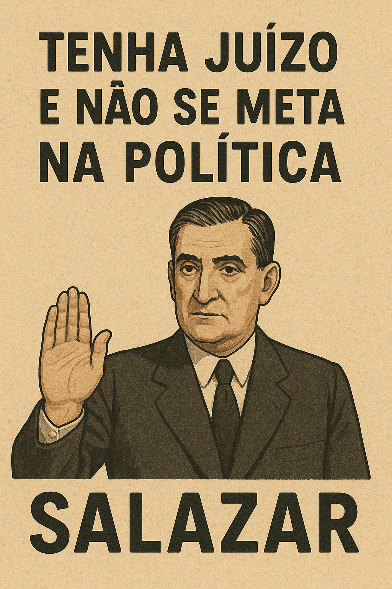

Publicado em 2025-05-21 11:47:56
"Tenha Juízo e Não se Meta na Política"
Dizia Salazar, com a placidez de quem manda sem pestanejar: “Tenha juízo e não se meta na política.” Era um aviso. Ou melhor, uma ordem disfarçada de conselho paternalista. A política era o quintal dele. Quem ousasse pisar a relva levava com o manguito do regime.
Passaram décadas, caiu o regime, voltou a liberdade. Mas a frase... ficou. Ecoa, fantasiada de democracia, nos bastidores da partidocracia moderna. Agora dizem-na com um sorriso institucional:
“Claro que pode participar… desde que seja por dentro do partido. E se não incomodar muito.”
Porque a verdade é que o sistema político português continua fechado — um condomínio fechado com quotas de acesso e cartões de militante. O cidadão comum, esse, é bem-vindo para aplaudir, votar, indignar-se nas redes... mas não para decidir.
E se tentar? Olham para ele com ar de compaixão: “Tenha juízo.”
Ou com sarcasmo: “Vai mudar o mundo, é?”
Ou, pior ainda, ignoram-no como se fosse uma criança a falar de revoluções de plástico.
E no entanto, é exactamente porque tantos tiveram “juízo” e não se meteram na política, que os partidos puderam transformá-la numa arena de vaidades, negócios de bastidores e compadrios.
A sociedade civil foi domesticada com discursos sobre estabilidade e segurança. E aos poucos, voltou a obedecer — não por medo, mas por hábito. O sonho da democracia viva foi substituído por boletins de voto sem alma.
Mas agora, quando o país se afunda em corrupção, em descrença, em extremos... os mesmos senhores do sistema perguntam: “Mas onde está o povo?”
Está cá. Só que disseram-lhe, anos a fio, que ter juízo era calar, aceitar, não se meter.
Pois então, é tempo de perder o “juízo” — e ganhar coragem.
Porque se os bons não se metem, os maus ocupam tudo. E depois, os mesmos que mandaram calar, virão dizer: “Como foi possível isto acontecer?”
Salazar dizia “não se meta na política”.
Agora é altura de dizer: “Sim, vou meter-me. Porque é meu dever, meu direito e minha rebeldia.”
Artigo da autoria de Augustus Veritas
Imagem cortesia de OpenAI (c)